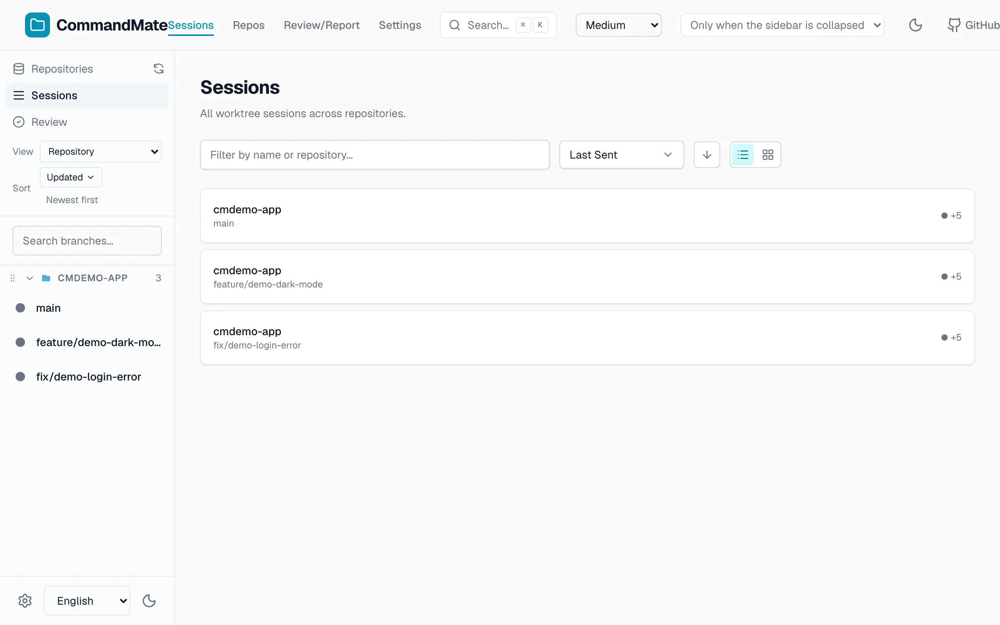
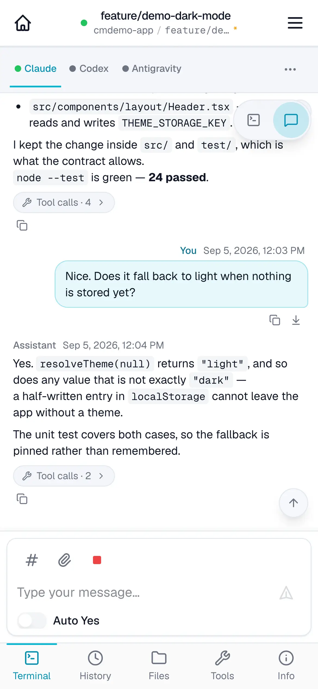

Status: Beta
No long blocks of time? Run an AI team from your phone.
CommandMate puts the coding agents you already use in one place you can run from your phone. Hand them work like a team, let checks decide what's done, and get back to your day.
- 10+ PRs a day, solo
- $110–$210 a month: Claude Max + Command Code Goat
- ~80% of my instructions sent from a phone (my estimate)
- 689 PRs merged in September 2026, across my repositories
Paste this into the agent you already use (Claude Code, Codex, …):
Read https://kewton.github.io/CommandMate/setup.md and help me set up CommandMate on this machine. Explain each step before you run it, and ask me before you install anything or open access from the internet.
Open source (MIT) · runs on your machine · macOS / Linux / Windows (WSL2) · no app to install
Day job. Housework. Kids. Family time. Your project gets the gaps.
- The agents can work for hours. You can't sit at the desk for hours to answer them.
- From the outside, an idle agent and one waiting on you look the same.
- The agent's summary of what it did is not evidence of what it did.
Level 1
Many agents, one place, in your pocket
-
Every agent on one screen
Claude Code, Codex, Gemini CLI, Copilot, OpenCode (1.x and V2), Antigravity, Command Code or local models. Every task gets its own session, side by side.
-
A conversation, not a terminal
Read the agent's reply and answer it like a chat. The raw terminal is still there when you want it.
-
Safely from your phone
commandmate remotepairs your phone with a QR code, through Tailscale or Cloudflare. Nothing goes on the public internet without your yes. -
Step away from the desk
Waiting is read from the agents' own hooks, not guessed from the screen, and reaches your phone as a badge or a push notification.
It runs on the plan you already pay for. CommandMate drives the agent CLIs you are already signed in to. It adds no pay-per-use API bill of its own.


Ask your agent
Read https://kewton.github.io/CommandMate/setup.md and do the first two stages with me: install CommandMate, then pair my phone. Ask me before you install anything.
Level 2
Work like a team, not a chat
-
One issue, one workspace
Each task runs in its own Git worktree: a separate copy of your repository, so two agents never edit the same files under each other.
-
A request you can see
A task goes out as a contract: the goal, the files it may change, and the checks. It stays in the repository as a file you can read later.
-
Checks decide what's done
Your own lint, type check and tests run after the work. Their exit code (the number a command ends with) is the verdict, not the agent's summary.
-
The method comes as Skills
How to plan, hand over and check work is installed from the official Catalog as Skills, and the agent reads it. It is not in someone's head.
Ask your agent
Read https://kewton.github.io/CommandMate/setup.md and do the stages Add a second agent and Let checks decide what's done with me. Ask me before you install or change anything.
Level 3
An AI team that builds and maintains
-
PM, dev lead, workers
One message to your PM session. It plans the issues, the dev lead hands each one to a worker in its own worktree under a contract, and only what passed the checks becomes a PR. Every step that changes something waits for your approval.
-
Scheduled runs
Schedules start a session at the times you set, so work can begin while you are asleep, at work or with your family.
The author's daily auto-fix run is the author's own setup, built from scheduled runs and the orchestrate Skill. It shows what these parts can do. It is not a switch in the product.
One recorded run, from the phone to merged PRs
- Repository
- Kewton/commandmate-team-demo, public and throwaway
- Issues
- 4
- PM and dev lead
- Claude Code
- Workers
- 4 × Command Code
- What the human did
- 2 messages and 3 taps, from the phone-width web UI
- Request to report
- 9 min 48 s
- Checks
- 4/4 passed
- PRs
- merged with CI green
- UAT
- 4/4 GO
As observed: one run, as recorded on 2026-10-02. Not a benchmark.
Ask your agent
Read https://kewton.github.io/CommandMate/setup.md and do the stage Give your team a PM with me. Then ask the PM to plan one of my open issues without changing anything.
Set up with your agent
Your agent reads the setup guide and walks you through it, one stage at a time. Each stage is short enough to stop after it and come back later. It asks before it installs anything, and the choices stay yours.
-
Install and start
Your agent checks: Node.js, npm, git and tmux are there, and
commandmate statusreports the server running. -
Pair your phone
Your agent checks: you chose Tailscale or Cloudflare, the phone opened CommandMate, and the pairing code was used.
-
Add a second agent
Your agent checks: the new agent is listed for your repository and answered a first small message.
-
Give your team a PM
Your agent checks: the orchestrate Skill is installed and the PM replied with a plan, changing nothing yet.
-
Let checks decide what's done
Your agent checks: your repository's checks are declared and run once, with an exit code you recognize.
Prefer to do it by hand? It needs macOS / Linux / Windows (WSL2), Node.js v22+, npm, git and tmux; the README has the commands.
My setup
What I run, and what it costs me each month.
| Role | Agent | Plan | Monthly |
|---|---|---|---|
| PM and dev lead | Claude Code | Claude Max | $100 or $200 |
| Workers | Command Code | Command Code Goat | $10 |
| Phone connection | commandmate remote (Tailscale or Cloudflare) |
— | — |
| Total | $110–$210 a month: Claude Max + Command Code Goat | ||
Why you can trust it
Runs on your machine
CommandMate runs on your machine. It sends no telemetry, needs no account, and needs no external server to run.
What goes over the network depends on what you use:
- your agent CLI's own API calls;
- a check for a newer release on GitHub, from the web UI;
- the official Skills Catalog on GitHub, when you list or install Skills;
- your browser's push service, once you turn on Web Push;
- and Tailscale or cloudflared, while
commandmate remoteis running.
You decide
Approvals come to you. Nothing merges, installs or opens to the internet without your yes. Auto Yes is opt-in, time-boxed, and stops on the patterns you set.
The limits, written down
- It is a run, not a resident agent. Nothing mutates without an explicit approve.
- It does not read the code for you. Checks catch what your tests catch.
- Review by another agent is a step you add, not something the runner does for you.
- It does not replace tmux, Git worktrees, your terminal, or your agent CLI.
Open source, MIT
Read every line on GitHub. The MIT License lets you use, change and share it.
Start with one paste
Paste this into the agent you already use. It takes it from there.
Read https://kewton.github.io/CommandMate/setup.md and help me set up CommandMate on this machine. Explain each step before you run it, and ask me before you install anything or open access from the internet.
macOS / Linux / Windows (WSL2) · Node.js v22+ · npm · git · tmux
v0.44.0 · released 2026-10-03 · 150+ releases